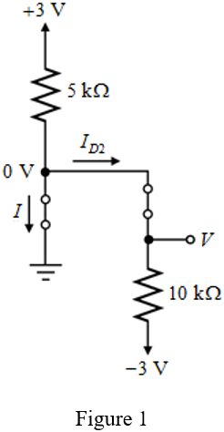
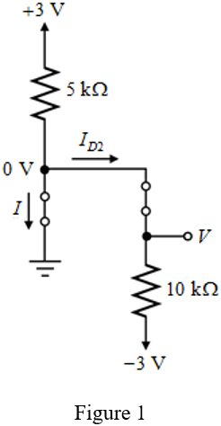
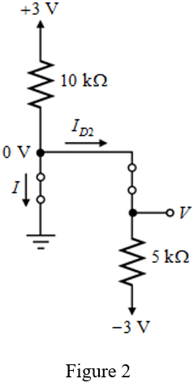
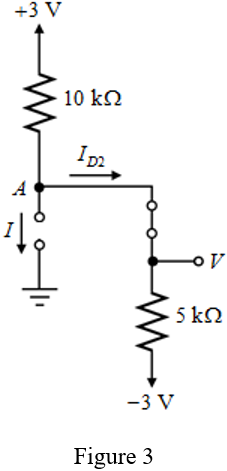

(a)
Refer to Figure P4.9 (a) in the textbook.
Assume that the ideal diodes  are in conducting mode.
are in conducting mode.
Replace the conducting diodes with short-circuit to draw the equivalent circuit.

(a)
Refer to Figure P4.9 (a) in the textbook.
Assume that the ideal diodes are in conducting mode.
Replace the conducting diodes with short-circuit to draw the equivalent circuit.

Determine the current through the diode, .
Write the node equation at ground node of the circuit.
Substitute 0.3 mA for .
Observe that the currents are positive. Therefore, the assumption that the diodes  are in conducting mode is true.
are in conducting mode is true.
Thus, the current  through the diode,
through the diode,  is and the output voltage
is and the output voltage  is .
is .
(b)
Refer to Figure P4.9 (b) in the textbook.
Assume that the ideal diodes are in conducting mode.
Replace the conducting diodes with short-circuit to draw the equivalent circuit.

 .
.
Write the node equation at ground node of the circuit.
Substitute 0.6 mA for  .
.
Observe that the current is negative. Therefore, the assumption that the diodes are in conducting mode is not true.
Assume that the diode  is only conducting and diode is OFF.
is only conducting and diode is OFF.
Replace the conducting diode with short-circuit and nonconducting diode with open-circuit to draw the equivalent circuit.

The current through the open-circuit is zero.
Therefore, the current through the diode,  is,
is,
Determine the current through the diode,  .
.
Find the voltage  at node
at node  of the circuit.
of the circuit.
Thus, the current  through the diode,
through the diode,  is and the output voltage is
is and the output voltage is  .
.